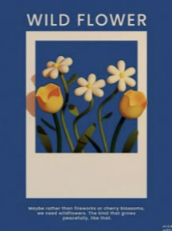
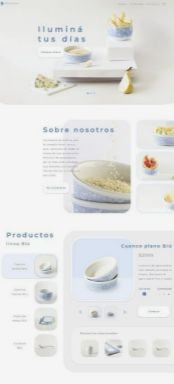
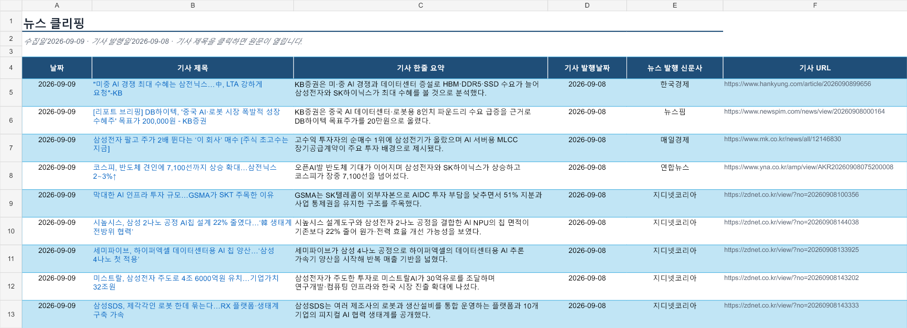
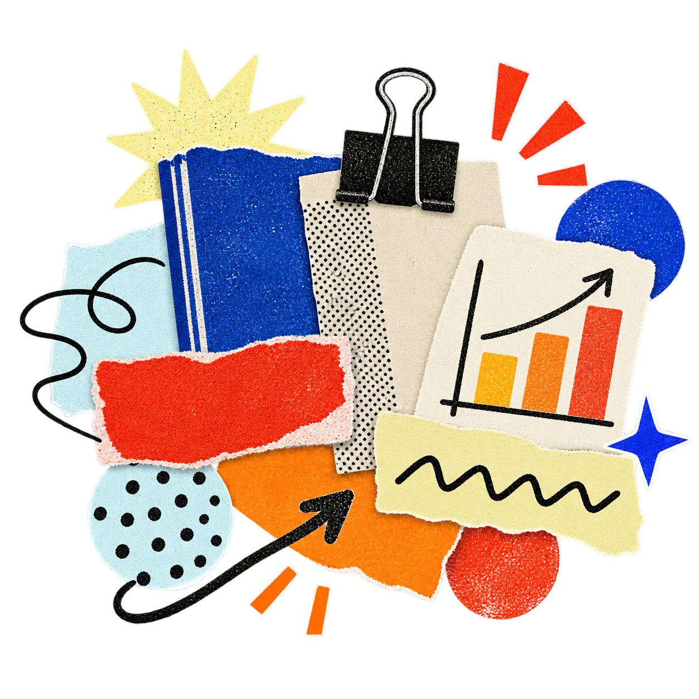
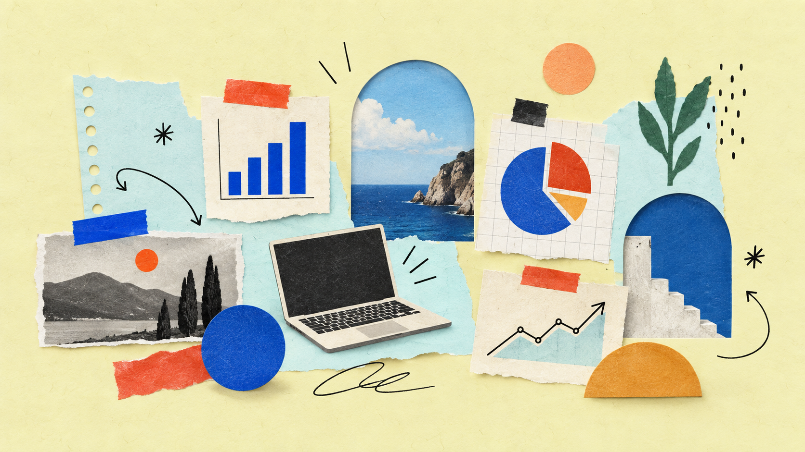

02 · IMAGE
Visual
Notes.
색, 형태, 질감을 조합하며 아이디어가 이미지가 되는 순간을 수집했습니다.

VISUAL ARCHIVE
이미지로 남긴 생각
수업에서 만든 이미지와 정보 디자인, 새롭게 구성한 에디토리얼 에셋을 한곳에 모았습니다.

여백과 재료의 질감을 살린 에디토리얼 실험

복잡한 정보를 읽기 쉬운 장면으로 정리했습니다.

종이와 선, 도형을 겹쳐 만든 웹 장식 에셋

포트폴리오의 새 디자인 언어를 담은 대표 이미지